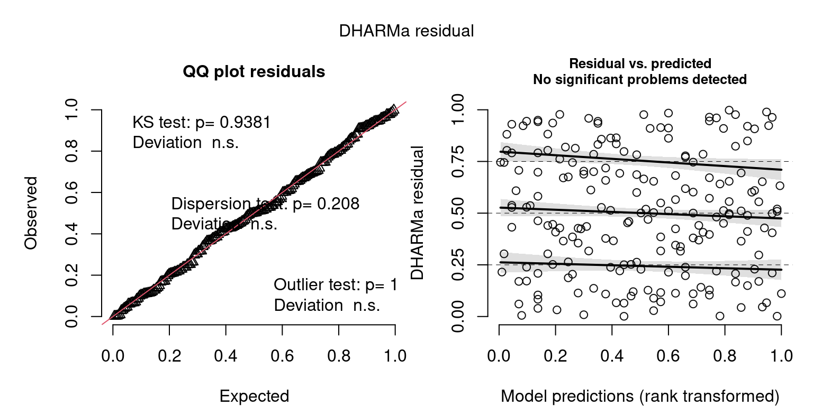
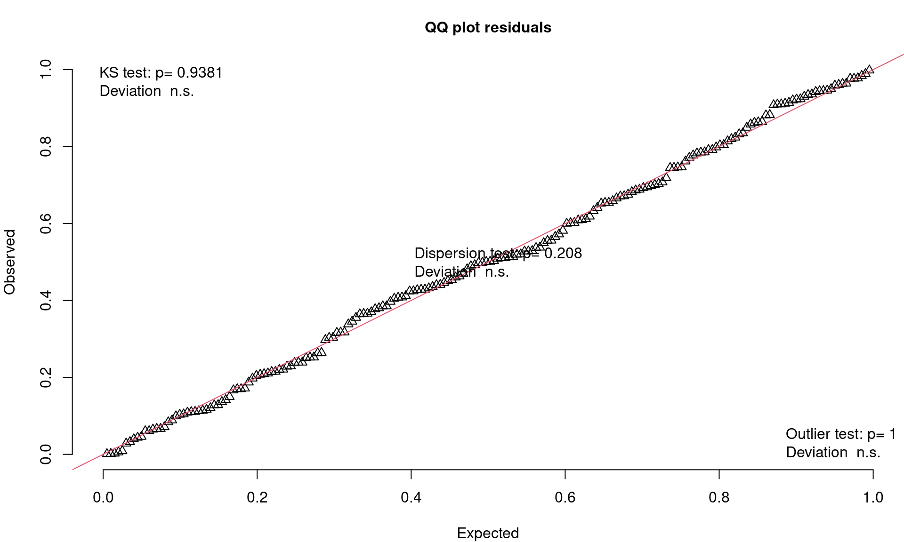
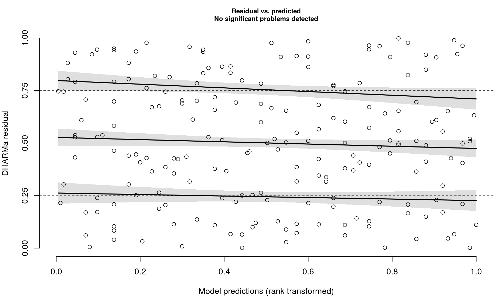
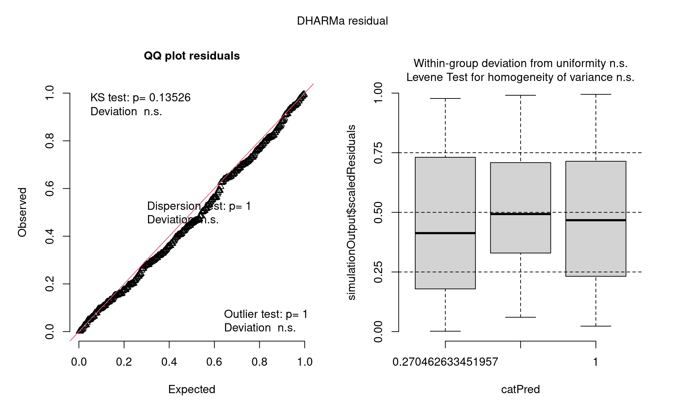
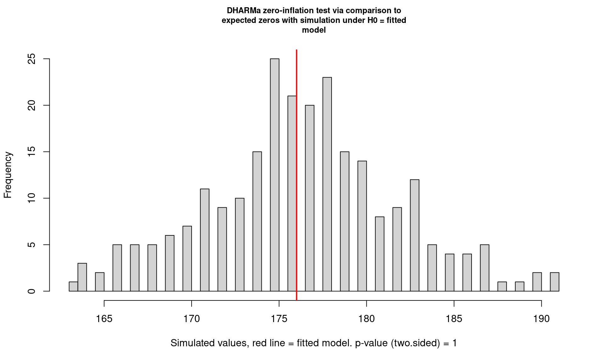

DHARMa - Diagnostics for General Linear Models
stats
lm
diagnostics
glm
R
DHARMa is a great R package for checking model diagnostics, especially for models that are typically hard to evaluate (e.g., glms etc.).
Simulated Residuals
DHARMa works by simulating residuals.
This figure (from the DHARMa tutorial) is an illustration of how the residuals are calculated…

-
If your data perfectly matched your model, what would the values look like?
- Pink histogram values show repeatedly simulated values expected
- How do your actual values compare?
- Black arrow on x-axis shows actual value
- Black arrow on y-axis shows residual calculated
- Residuals calculated by where observation lies on cumulative density of simulated values
- Residuals are scaled (0 to 1)
- If data fits model perfectly, expect all residuals ~ 0.5
- Therefore, a good fit is always = flat/uniform distribution
Interpreting Residuals
If your data fits the model
- Residuals follow a flat (uniform) distribution (no matter what model!)
- Expect: Straight line on QQ plot of uniform distribution (similar to QQ Normal plot)
- Expect: No patterns between residuals and model predictions (similar to heteroscedasticity plot, resid vs. fitted)
Note:
These aren’t the same residual plots that one would usually use to assess model fit, but you can interpret them in a similar manner, when looking for problems
Closer Look at QQ Plots
- Visual check of uniform distribution (expect points to match line)
- Tests Uniformity with Kolmogorov-Smirnov (KS) test (Uniform distribution)
- Tests for Over/Underdispersion with Dispersion Test
- Tests for more Outliers than expected with Outlier test

Closer Look at Residuals vs. Predicted Plots
- Check distribution of residuals (visually and with quantile tests)
- Dotted lines show expected quantiles
- Black lines show simulated quantiles (want straight lines)
- Outliers would show up as red stars

Usage
library(DHARMa)
library(palmerpenguins)
m <- lm(body_mass_g ~ flipper_length_mm, data = penguins)
r <- simulateResiduals(m, n = 1000, plot = TRUE)-
simulateResiduals()function from - Use
plot = TRUEto produce diagnostic plots to see if simulated match expectation -
n = 1000isn’t strictly necessary but runs more simulations to produce more stable results
Applicable to Most Linear Models
- REMEMBER! Not assessing residuals in the traditional way…
- Assessing whether residuals fit expected pattern given this model
- This includes assumptions, but also includes general fit, etc.
- So, we can use this to see if our model could be improved…
- And we can use DHARMa to test various different types of models
For example, binomial models
penguins <- mutate(penguins,
size = flipper_length_mm > median(flipper_length_mm, na.rm = TRUE))
m <- glm(size ~ species, family = "binomial", data = penguins)
r <- simulateResiduals(m, plot = TRUE)
Other Tests
In addition to testing for outliers, over/underdispersion, etc., DHARMa also has tests for zero-inflation.
But important to remember that…
- zero-inflation may also appear as iffy residuals
- overdispersion can lead to false positives (so address overdispersion first)

DHARMa zero-inflation test via comparison to expected zeros with
simulation under H0 = fitted model
data: simulationOutput
ratioObsSim = 0.99699, p-value = 1
alternative hypothesis: two.sidedResources
- DHARMa Tutorial (Many great examples of model checking)
Session Info
devtools::session_info()─ Session info ───────────────────────────────────────────────────────────────
setting value
version R version 4.3.1 (2023-06-16)
os Ubuntu 22.04.3 LTS
system x86_64, linux-gnu
ui X11
language en_CA:en
collate en_CA.UTF-8
ctype en_CA.UTF-8
tz America/Winnipeg
date 2023-09-04
pandoc 3.1.1 @ /usr/lib/rstudio/resources/app/bin/quarto/bin/tools/ (via rmarkdown)
─ Packages ───────────────────────────────────────────────────────────────────
package * version date (UTC) lib source
bit 4.0.5 2022-11-15 [1] CRAN (R 4.3.0)
bit64 4.0.5 2020-08-30 [1] CRAN (R 4.3.0)
boot 1.3-28 2021-05-03 [4] CRAN (R 4.2.0)
cachem 1.0.8 2023-05-01 [1] CRAN (R 4.3.0)
callr 3.7.3 2022-11-02 [1] CRAN (R 4.3.0)
cli 3.6.1 2023-03-23 [1] CRAN (R 4.3.0)
codetools 0.2-19 2023-02-01 [4] CRAN (R 4.2.2)
crayon 1.5.2 2022-09-29 [1] CRAN (R 4.3.0)
curl 5.0.0 2023-01-12 [1] CRAN (R 4.3.0)
devtools 2.4.5 2022-10-11 [1] CRAN (R 4.3.0)
DHARMa * 0.4.6 2022-09-08 [1] CRAN (R 4.3.1)
digest 0.6.31 2022-12-11 [1] CRAN (R 4.3.0)
doParallel 1.0.17 2022-02-07 [1] CRAN (R 4.3.1)
dplyr * 1.1.2 2023-04-20 [1] CRAN (R 4.3.0)
ellipsis 0.3.2 2021-04-29 [1] CRAN (R 4.3.0)
evaluate 0.20 2023-01-17 [1] CRAN (R 4.3.0)
fansi 1.0.4 2023-01-22 [1] CRAN (R 4.3.0)
fastmap 1.1.1 2023-02-24 [1] CRAN (R 4.3.0)
foreach 1.5.2 2022-02-02 [1] CRAN (R 4.3.0)
fs 1.6.2 2023-04-25 [1] CRAN (R 4.3.0)
gap 1.5-3 2023-08-26 [1] CRAN (R 4.3.1)
gap.datasets 0.0.6 2023-08-25 [1] CRAN (R 4.3.1)
generics 0.1.3 2022-07-05 [1] CRAN (R 4.3.0)
glue 1.6.2 2022-02-24 [1] CRAN (R 4.3.0)
hms 1.1.3 2023-03-21 [1] CRAN (R 4.3.0)
htmltools 0.5.5 2023-03-23 [1] CRAN (R 4.3.0)
htmlwidgets 1.6.2 2023-03-17 [1] CRAN (R 4.3.0)
httpuv 1.6.9 2023-02-14 [1] CRAN (R 4.3.0)
iterators 1.0.14 2022-02-05 [1] CRAN (R 4.3.0)
jsonlite 1.8.4 2022-12-06 [1] CRAN (R 4.3.0)
knitr 1.42 2023-01-25 [1] CRAN (R 4.3.0)
later 1.3.0 2021-08-18 [1] CRAN (R 4.3.0)
lattice 0.21-8 2023-04-05 [4] CRAN (R 4.3.0)
lifecycle 1.0.3 2022-10-07 [1] CRAN (R 4.3.0)
lme4 1.1-33 2023-04-25 [1] CRAN (R 4.3.0)
magrittr 2.0.3 2022-03-30 [1] CRAN (R 4.3.0)
MASS 7.3-60 2023-05-04 [4] CRAN (R 4.3.1)
Matrix 1.6-0 2023-07-08 [4] CRAN (R 4.3.1)
memoise 2.0.1 2021-11-26 [1] CRAN (R 4.3.0)
mgcv 1.9-0 2023-07-11 [4] CRAN (R 4.3.1)
mime 0.12 2021-09-28 [1] CRAN (R 4.3.0)
miniUI 0.1.1.1 2018-05-18 [1] CRAN (R 4.3.0)
minqa 1.2.5 2022-10-19 [1] CRAN (R 4.3.0)
nlme 3.1-162 2023-01-31 [4] CRAN (R 4.2.2)
nloptr 2.0.3 2022-05-26 [1] CRAN (R 4.3.0)
palmerpenguins * 0.1.1 2022-08-15 [1] CRAN (R 4.3.0)
pillar 1.9.0 2023-03-22 [1] CRAN (R 4.3.0)
pkgbuild 1.4.0 2022-11-27 [1] CRAN (R 4.3.0)
pkgconfig 2.0.3 2019-09-22 [1] CRAN (R 4.3.0)
pkgload 1.3.2 2022-11-16 [1] CRAN (R 4.3.0)
plyr 1.8.8 2022-11-11 [1] CRAN (R 4.3.0)
prettyunits 1.1.1 2020-01-24 [1] CRAN (R 4.3.0)
processx 3.8.1 2023-04-18 [1] CRAN (R 4.3.0)
profvis 0.3.7 2020-11-02 [1] CRAN (R 4.3.0)
promises 1.2.0.1 2021-02-11 [1] CRAN (R 4.3.0)
ps 1.7.5 2023-04-18 [1] CRAN (R 4.3.0)
purrr 1.0.1 2023-01-10 [1] CRAN (R 4.3.0)
qgam 1.3.4 2021-11-22 [1] CRAN (R 4.3.1)
R6 2.5.1 2021-08-19 [1] CRAN (R 4.3.0)
rbibutils 2.2.15 2023-08-21 [1] CRAN (R 4.3.1)
Rcpp 1.0.10 2023-01-22 [1] CRAN (R 4.3.0)
Rdpack 2.5 2023-08-21 [1] CRAN (R 4.3.1)
readr * 2.1.4 2023-02-10 [1] CRAN (R 4.3.0)
remotes 2.4.2 2021-11-30 [1] CRAN (R 4.3.0)
rlang 1.1.1 2023-04-28 [1] CRAN (R 4.3.0)
rmarkdown 2.21 2023-03-26 [1] CRAN (R 4.3.0)
rstudioapi 0.14 2022-08-22 [1] CRAN (R 4.3.0)
sessioninfo 1.2.2 2021-12-06 [1] CRAN (R 4.3.0)
shiny 1.7.4 2022-12-15 [1] CRAN (R 4.3.0)
stringi 1.7.12 2023-01-11 [1] CRAN (R 4.3.0)
stringr 1.5.0 2022-12-02 [1] CRAN (R 4.3.0)
tibble 3.2.1 2023-03-20 [1] CRAN (R 4.3.0)
tidyselect 1.2.0 2022-10-10 [1] CRAN (R 4.3.0)
tzdb 0.3.0 2022-03-28 [1] CRAN (R 4.3.0)
urlchecker 1.0.1 2021-11-30 [1] CRAN (R 4.3.0)
usethis 2.2.0 2023-06-06 [1] CRAN (R 4.3.0)
utf8 1.2.3 2023-01-31 [1] CRAN (R 4.3.0)
vctrs 0.6.2 2023-04-19 [1] CRAN (R 4.3.0)
vroom 1.6.3 2023-04-28 [1] CRAN (R 4.3.0)
xfun 0.39 2023-04-20 [1] CRAN (R 4.3.0)
xtable 1.8-4 2019-04-21 [1] CRAN (R 4.3.0)
yaml 2.3.7 2023-01-23 [1] CRAN (R 4.3.0)
[1] /home/steffi/R/x86_64-pc-linux-gnu-library/4.3
[2] /usr/local/lib/R/site-library
[3] /usr/lib/R/site-library
[4] /usr/lib/R/library
──────────────────────────────────────────────────────────────────────────────